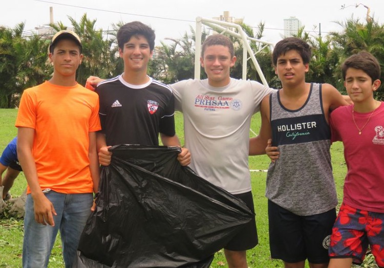

Blog
Hello, my name is Jose! 👋

I’m a hard working, goal-driven, technology enthusiast native from San Juan, PR. I’m currently a junior Computer Science major at the University of Notre Dame. Additionally, my passion for technology, innovation, and business has led me to pick up a minor in Engineering Corporate Practice.
My culture, family and experiences have shaped who I am today. 2017 was a very challenging year for all of us down in the Carribbean. Hurricane Maria ripped my island apart, taking the lives of thousands and provoking the larget blackout in US history (second-largest in the world). If I learned anything from this tragedy is that when life throws you down (at 160 km/hour to be precise) you rebuild and come back stronger.


In 2019 I became an Eagle Scout after 8 years of hard work and sacrifice. BSA has been the most influential organization in my life teaching me the importance of serving others without expecting anything in return. The values instilled in me by this organization and the lessons learned on a weekly basis forged me into a leader eager to make a difference in the world.
In 2020 I graduated from Colegio San Jose R.P. intrigued by the world I would find outside the familiarity and comfort of my Puerto Rican community.
During the first half of the 2022 summer I studied abroad in Valencia, Spain. This experience opened my eyes to a variety of different perspectives and allowed me to dive into the Spanish culture. These 6 weeks were absolutely amazing and full of adventures, delicious paellas, and surreal sights.


I flew into Chicago straight from Madrid extremely enthusiastic about commencing my career in the industry as a Technology Consulting Intern at Ernst & Young. During this second half of the summer I experienced life in one of the biggest firms in one of the biggest cities. I gained valuable public speaking experience, as well as networking and planning skills. Our team worked on developing a platform for the American Public Life Insurance Company. This was my first exposure to Agile sprints an iterations. Additionally, I got to experience Chicago and all of its wonders.